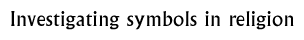

Follow-up 8  |
|
Objectives: To understand that symbols are used in Buddhism and Hinduism to express and explore ideas about beliefs and gods. (Linked to Unit 3A 'What do signs and symbols mean in religion' from QCA scheme of work for primary RE).
Materials: Background information sheets (see below)
Class set-up: Small group project.
Vocabulary: Symbolism, Hinduism, Buddhism, image.
Activity: Explain to children that they are going to be exploring how gods and religious ideas are symbolised in Buddhism and Hinduism. Ask children to investigate the Buddhism 'Explore' section and record the symbols that are used to represent Buddha and his teachings. Divide the class into groups of 5/6 and ask them to discuss what they think these symbols might represent to Buddhists and why they were chosen (refer them to the story of Buddha's life). Get the groups to feed back their ideas, explaining their thoughts. Using the story, explain any symbols that the children are still unsure about (see background information sheet).
Ask children to look at the Early Hinduism 'Explore' section, recording how the gods are shown in the images. Ask each group to look at one or two of the images (there are sixteen choices, but some are more suitable than others for this task). Using the information provided with each of the images, ask them to discuss why they think the gods are symbolised by the use of particular colours or particular animals. For example Dyaus appears as a bull and Prithvi appears as a cow. Get the groups to report back. (See also background information sheet on Early Hinduism). Ask the children what they have found out (perhaps making comparisons to symbols in Christianity and Islam). Ask them why they think symbols are used by religions to represent gods or aspects of the beliefs.This work could be formally recorded as a class display, with the children drawing the Buddhist and Hindu representations of their gods and word-processing an explanation of what these mean. Teachers' Notes: The Buddha was symbolised with the following images.Early Period: birth symbolised by lotuses springing from a vase and a lion-crowned pillar. Enlightenment is symbolised by a tree, beneath which is sometimes a throne and footprints. The first sermon is symbolised by a wheel-crowned pillar. Death is symbolised by a stupa. Middle Period: introduction of the pillar of fire to denote Buddha. Some images of the Buddha himself, with the tree and footprints. Background information:
Early HinduismBuddha Buddhist Pilgrimage Teachings of the Buddha The Growth and Spread of Buddhism
© The British Museum |